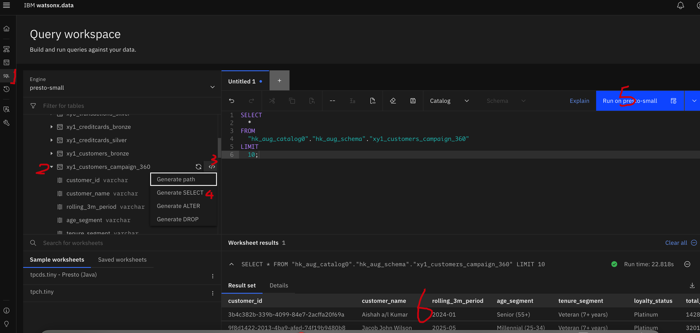
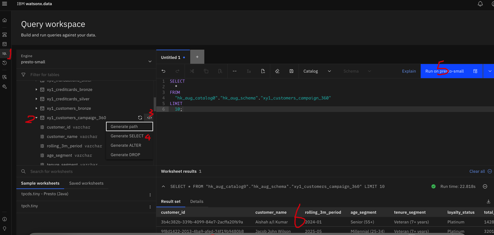

Go to the top and under "Run" click "Run All Cells"

After a short while (maybe long while ^_^!!), you will find the notebook had been executed sucessfully"
Similarly, you can test the gold tables in watsonx.data UI" 
For the customer_risk_360 gold table, we:
For the customer_campaign_360 gold table, we:
Why do not us use the DataStage?
Some complex functions, like monthly rolling features, would be easy to create in code.
In assets of the project, open the "lab2_ETLwithSpark".
Click Edit on the right upper conner"
Modify the parameters, based on the instructions:
username: your user name
wxd_apikey: the apikey you created on lab0
username: your user name
wxd_apikey: the apikey you created on lab0
catalog_name = "hk_aug_catalog0" ; No need to change but please confirm it align with your silver tables catalog
schema_name = "hk_aug_schema0" ## No need to change No need to change but please confirm it align with your silver tables schema
transactions_silver_table = "xy1_transactions_silver" Need to change, the silver transactions table you just created
cards_silver_table = "xy1_creditcards_silver" Need to change, the silver credit cards table you just created
customers_silver_table = "xy1_customers_silver" Need to change, the silver customers table you just created
gold_risk_table = "xy1_customers_risk_360" Need to change, the gold customer risk table name, should be [your name]_customers_risk_360
gold_campaign_table = "xy1_customers_campaign_360" Need to change, the gold customer campaign table name, should be [your name]_customers_campaign_360

Go to the top and under "Run" click "Run All Cells"
After a short while (maybe long while ^_^!!), you will find the notebook had been executed sucessfully"
Similarly, you can test the gold tables in watsonx.data UI"
